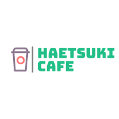

|  |
Trabalhe ConoscoCafé é incrível. Nós amamos. Mas sabor e aroma são apenas uma parte de toda a experiência. Sabíamos que algo estava faltando. Alguma coisa que combinasse com pureza que o café representa. Achamos, no outro lado do mundo. Japão. Lá havia tudo que estavamos procurando. Simplicidade, minimalismo e a constante busca pela perfeição. Inspirados por tudo que vimos por lá, The Coffee foi criado. O melhor do café brasileiro combinado com a pureza e o perfeccionismo do Japão. Processo SeletivoEm busca de inovar e oferecer uma experiência diferente e que agregue mais valor ao processo seletivo de seus futuros colaboradores, a empresa Haetsuki Café se tornou parceira do TAQE. Trata-se de um aplicativo que capacita e insere jovens a novas oportunidades. Tudo 100% gratuito e seguro! E-mail: haetsuki2@gmail.comTelefone: (24) 9965-9999 |
|
Venha fazer parte da nossa empresa e compartilhar esse amor por café e cultura asiática. |
|
© Haetsuki Café- 2023 |